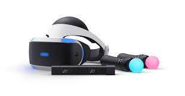

El desarrollo de la realidad virtual (RV) ha experimentado un crecimiento exponencial en las últimas décadas, impulsado por avances tecnológicos y una creciente demanda en diversos sectores. A diferencia de otras tecnologías, la RV no solo depende de hardware y software avanzados, sino también de factores como la inmersión, la interacción y la usabilidad. Este ensayo explora las características fundamentales que definen el desarrollo de la RV, desde sus componentes técnicos hasta sus implicaciones sociales y futuras proyecciones.
El desarrollo de sistemas de realidad virtual requiere la integración de múltiples tecnologías. Entre las características técnicas más relevantes se encuentran:
a) Hardware Especializado
Dispositivos de visualización: Las gafas VR (como Oculus Rift, HTC Vive o PlayStation VR) utilizan pantallas de alta resolución y baja latencia para evitar el motion sickness. Sistemas de seguimiento: Sensores de movimiento (como los lighthouse de Valve) o cámaras infrarrojas permiten el rastreo preciso de la posición del usuario. Controladores hápticos: Dispositivos como los guantes VR o los mandos táctiles proporcionan retroalimentación física para una mayor inmersión.
b) Software y Motores Gráficos
Motores de renderizado 3D: Unreal Engine, Unity y CryEngine son fundamentales para crear entornos virtuales realistas.
Algoritmos de IA: La inteligencia artificial mejora la interacción con personajes virtuales y adapta los entornos según el comportamiento del usuario.
Optimización de rendimiento: Para evitar retrasos (lag), se emplean técnicas como el foveated rendering (que reduce la calidad gráfica en la periferia visual).


Otro campo de gran impacto es la industria musical, donde las aplicaciones multimedia han transformado la forma en que se produce y consume la música. Plataformas como Spotify, Apple Music y YouTube Music han facilitado el acceso a millones de canciones, eliminando la necesidad de formatos físicos. Además, herramientas de edición de audio como FL Studio, Pro Tools y GarageBand han permitido a artistas y productores crear música de alta calidad sin la necesidad de estudios de grabación tradicionales.
La efectividad de la RV depende de su capacidad para engañar al cerebro y hacerle creer que el entorno virtual es real. Esto se logra mediante:
a) Inmersión Sensorial
Visual: Pantallas de alta densidad de píxeles y alto refresh rate (90 Hz o más).
Auditiva: Sonido binaural y 3D para simular direccionalidad.
Táctil: Chalecos y guantes hápticos que simulan texturas y fuerzas


b) Interacción Natural
Reconocimiento de gestos: Tecnologías como hand tracking permiten interactuar sin mandos.
Movimiento físico: Plataformas omnidireccionales y treadmills VR facilitan el desplazamiento en espacios reducidos.
El avance de la RV no sería posible sin su aplicación en campos clave:
a) Entretenimiento y Videojuegos
Juegos inmersivos (Half-Life: Alyx, Resident Evil 4 VR).
Cines virtuales y conciertos en RV (como los de Fortnite).
b) Educación y Simulación
Entrenamiento para pilotos, médicos y soldados.
Excursiones virtuales a museos o sitios históricos.
c) Medicina y Psicología
Terapias de exposición para fobias y TEPT.
Rehabilitación motriz mediante juegos serios (serious games).